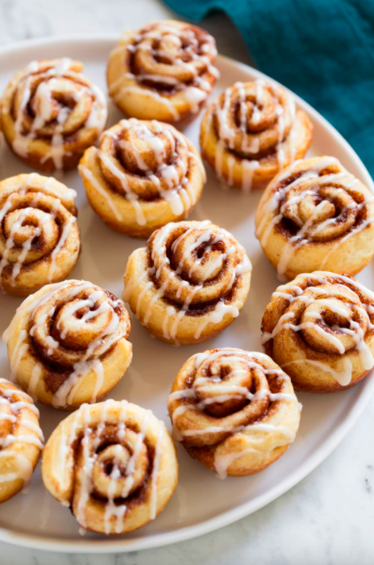

How to make Cinammon Rolls
Description
A cinnamon roll is a sweet baked dough filled with a cinnamon-sugar filling. Made with a rich dough leavened with yeast, their characteristic form is due to rolling a dough sheet containing sweetened cinnamon filling. Common toppings for cinnamon rolls include cream cheese frosting or a sugar glaze.